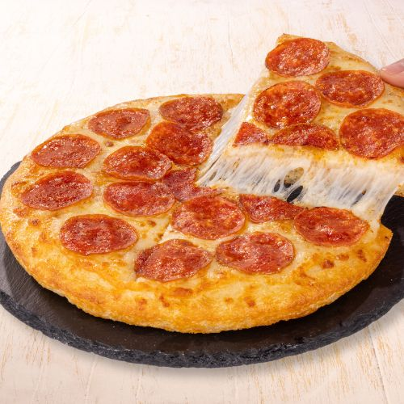

Pizza
Home

Pizza is a dish of Italian origin that consists of a flattened bread dough
base, usually round, covered with tomato sauce and melted cheese (such as
mozzarella).
Recipes
- 1. Dough (a.k.a.: flour, water, yeast, and salt)
-
2. A pizza pan, or baking stone and pizza peel (if you're using a peel,
you need fine corn meal or dried bread crumbs), plus an oven to put it
in.
- 3. Toppings: crushed tomatoes, cheese, veggies, meats, etc.
Steps
-
Activate the Yeast: Whisk warm water, sugar, and yeast in a bowl. Let it
sit for 5 minutes until frothy.
-
Make the Dough: Add flour, olive oil, and salt to the yeast mixture.
Beat on medium speed or mix by hand until the dough forms and pulls away
from the sides. Knead for 5 minutes until smooth.
-
First Rise: Lightly oil a large bowl, place the dough inside, and cover
with a damp towel. Let it rise in a warm spot for about 90 minutes, or
until it doubles in size.
-
Preheat Oven: Preheat your oven to 475°F (246°C) for at least 20
minutes. If using a pizza stone, leave it in the oven while heating.
-
Shape the Dough: Punch down the risen dough to remove air bubbles, and
divide it in half. On a floured surface, press and stretch the dough out
into a 10- to 12-inch circle.
-
Assemble & Top: Make small dents on the surface of the dough with your
fingertips and brush with olive oil (to prevent sogginess). Spoon on a
thin layer of sauce, sprinkle with mozzarella cheese, and add your
favorite toppings.
-
Bake: Bake for 10 to 15 minutes until the crust is golden-brown and the
cheese is bubbly.